| 日付 | 2023年5月21日（日） |
|---|---|
| 山域 | 奥武蔵 |
| メンバー | 家族（妻、長男・9歳） |
| 山行形態 | 子連れ日帰り |
| アクセス | 車 |
| ルート (Map) | 名郷 (8:44) - (9:45) 天狗岩 - (10:32) 前武川岳 - (10:48) 武川岳 (10:56) - (11:17) 妻坂峠 - (12:28) 大持山 (12:57) - (13:26) ウノタワ - (14:00) 鳥首峠 - (14:42) 白岩 - (15:18) 名郷 |
本日は久々に予定の入っていない日曜日。
天気予報はあまりよくないが雨は降らなさそうなので、
トレーニング山行と割り切って、さして展望の良くない
武川岳～大持山の周回コースを歩くことにする。
武川岳は15年振り、大持山は11年振りの再訪だ。
名郷駐車場に車を停める。標高330m。
料金は700円だ。名郷は4度目の訪問だが車で来るのは初めてだ。
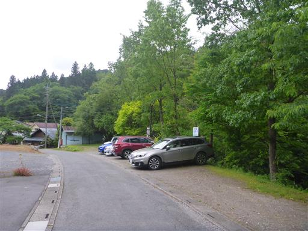
しばらく車道を歩いて登山口に到着。とてつもない急斜面の階段だ。
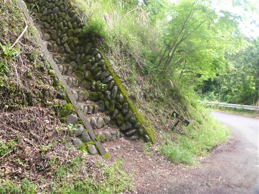
最初は杉の植林地帯を登って行く。
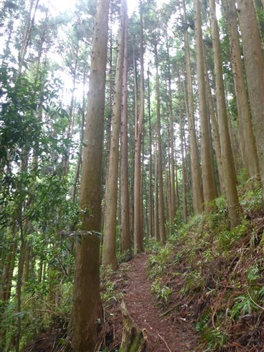
再び車道が出てくる。通る車のない車道を横切る。
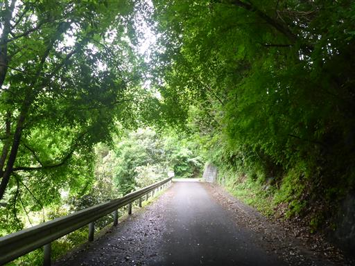
右手にフェンスが出てきて展望が広がる。この先は石灰岩採石場のようだ。
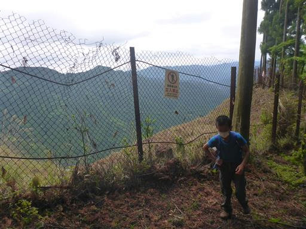
天狗岩に到着。岩場を通る男坂を選択。
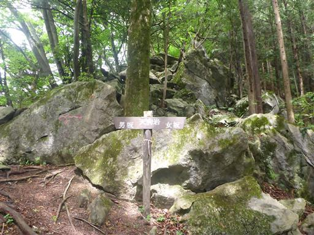
岩だらけの道を登って行く。
岩場と言うほど傾斜はきつくなく、岩が散在する登山道と言う感じだ。
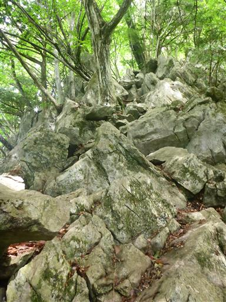
前武川岳に到着。
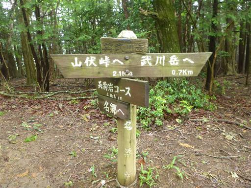
尾根の広い美しい稜線になる。
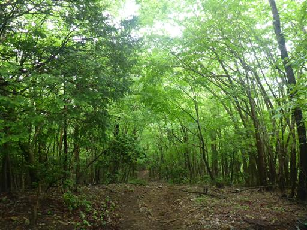
前武川岳から一登りで武川岳に到着する。標高1052m。
到着時は無人で、静かな山頂だ。
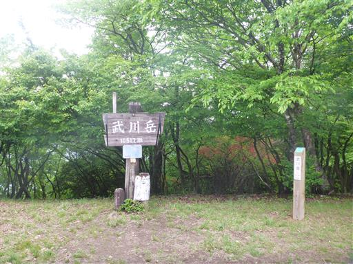
樹木に覆われ展望はほとんどない。
まだ先は長いので、10分ほど休んだらすぐ出発する。
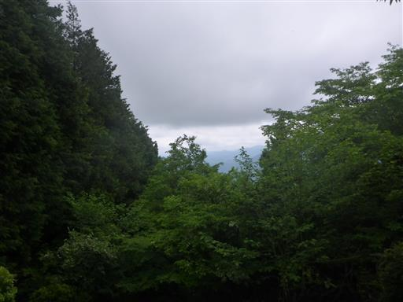
細い木がコケに覆われている。
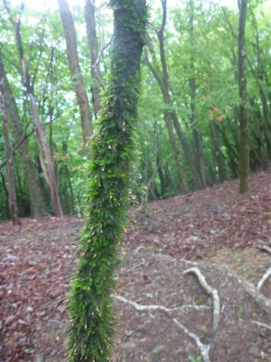
妻坂峠まで下ってくる。小さな地蔵が祀られている。
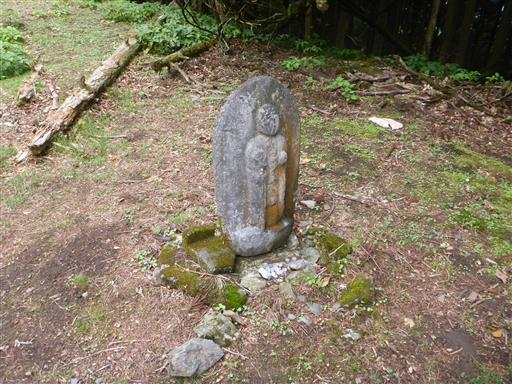
立派なフジの木があり、花を咲かせている。
木の足元を見ると、グルグルに巻き付くフジの木の幹が見える。
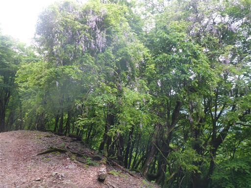
栗のイガがたくさん落ちている。
中から実を取り出してみるが、あまり状態の良いものは見つからない。
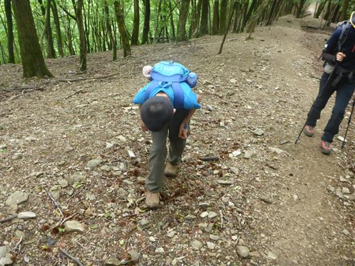
登山道は雲に覆われだすが、同時に日が差している。

分岐点に到着。大持山まであとわずかだ。
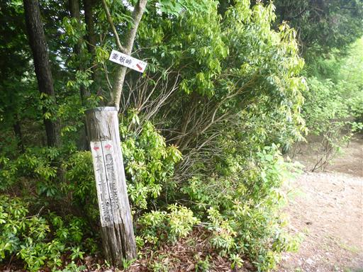
ここは若干の展望ポイントだが、雲に覆われていて遠望はほとんどない。

富士見の丸太。
本日の天気では富士山は見えない。樹林帯の中だが晴れていれば富士山が見えるのだろうか？
そもそもこれは丸太なのだろうか？
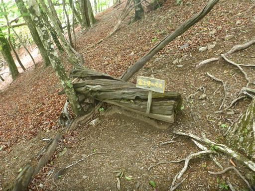
大持山山頂に到着。標高1294m。
こちらの山頂も展望は全くない。ものすごく虫が多く、とてもゆっくり休んでいられない山頂だ。
昼食とおやつを食べたら、早々に撤退する。
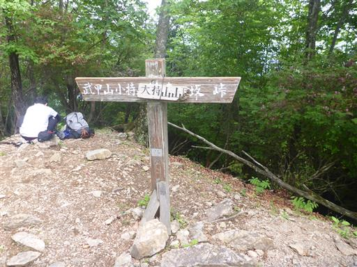
分岐点まで戻ったら、周回コースを歩くため鳥首峠に向かう。
こちらは緑がかなり濃い登山道だ。
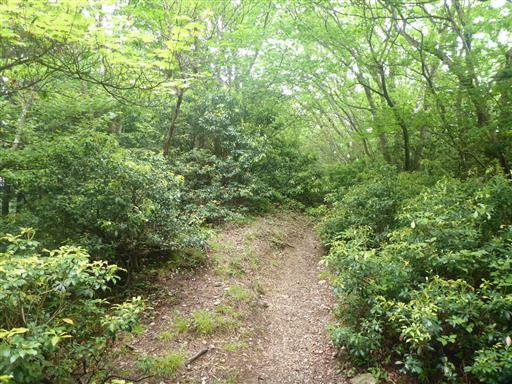
ウノタワに到着。

山の中では珍しく広い平地が広がっている。
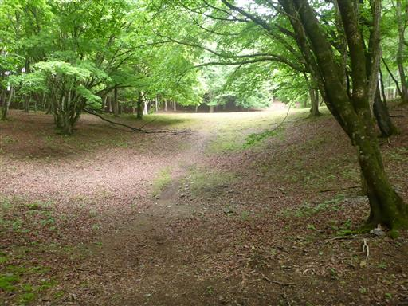
登山道に現れた立派な岩。登山道は左から巻いていく。
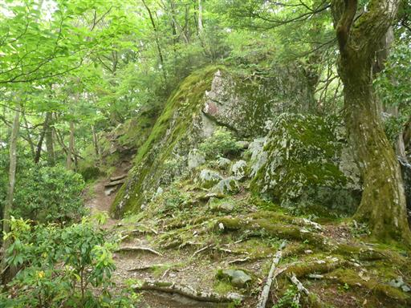
突然樹林帯のない場所に出てくる。
コンクリートブロックが4つあるため、ここには鉄塔があったものと思われる。
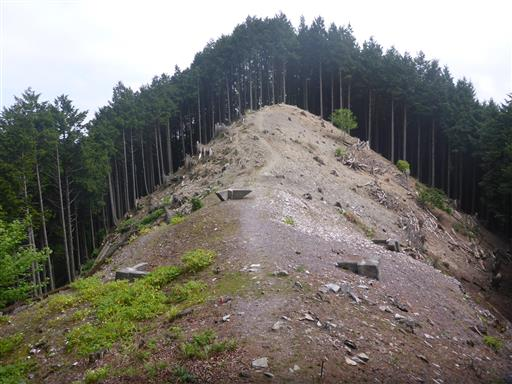
鳥首峠に到着。こちらの峠には小さな祠がある。
ここから白岩に下山する。
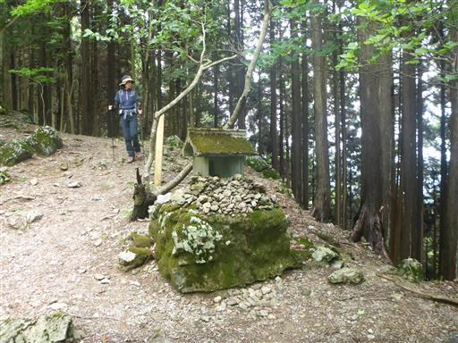
白い花がたくさん咲いていて、かなり強い香りが周囲に漂っている。
アジサイの花に似ているが、ヤマアジサイだろうか？
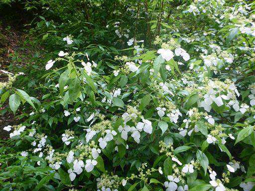
打ち捨てられた廃屋。案内板によると、かつてはここに白岩集落があり
二十三軒の家々があったが、昭和60年に無人になったらしい。
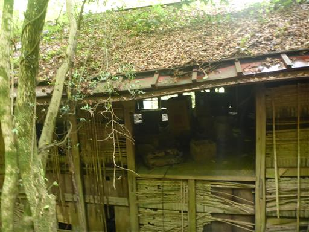
下山。かつてここにはJFEミネラルの工場があったが跡形もなくなっている。
以前ここに来た時の記録を見ると大きな工場があったのだが…
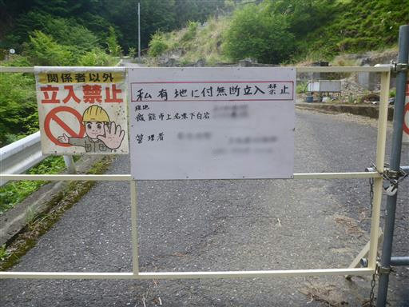
あとは長い長い林道を歩いて名郷に向かう。
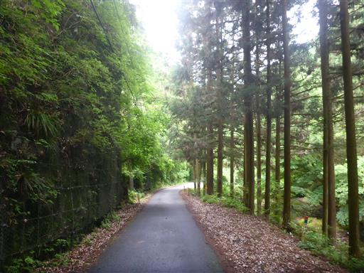
名郷に到着。駐車料金700円を入れる。
当初の予定通りと言えば予定通りだが、全く展望の広がらない山行だった。
それなりのロングコースを歩けたので、良いトレーニングにはなった。
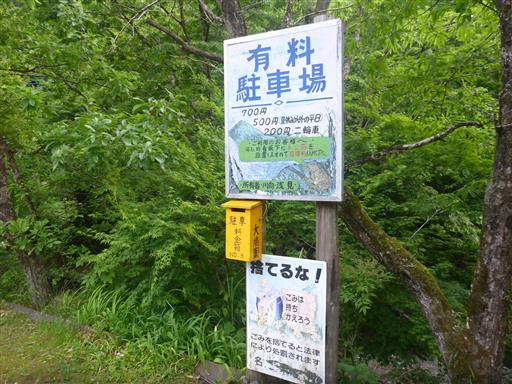